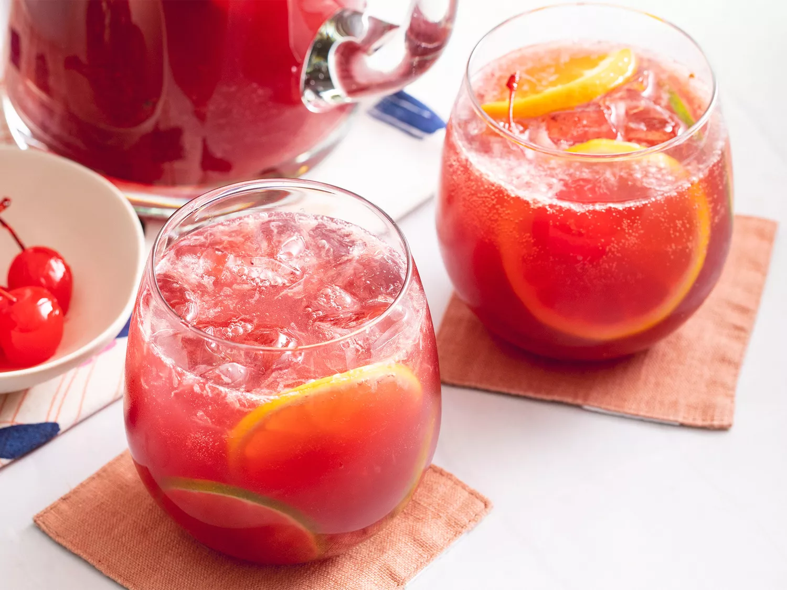
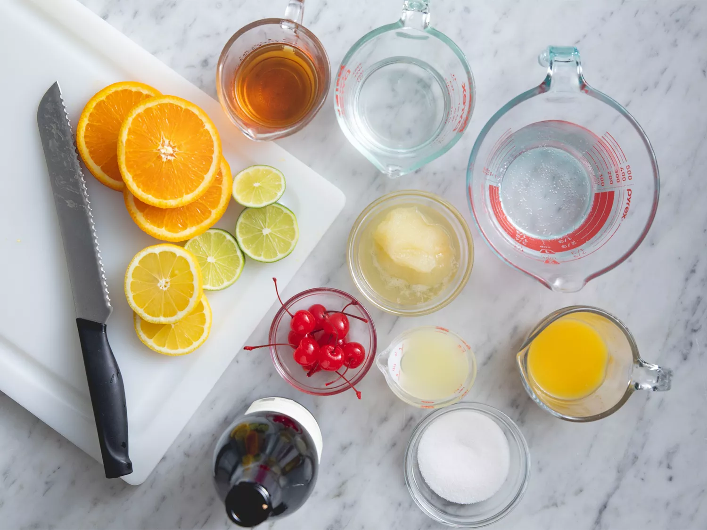

Sangria! Sangria!

You might be asking...What is sangria?
Sangria is an alcoholic punch that originated in Spain and Portugal. There are two common varieties: red sangria and white sangria. It's typically made with wine, liqueur, sparkling water, fruit juice, and lots of sliced fruit.
what's in Sangria?
There are many variations of sangria ingredients, but this recipe for the best sangria calls for:
- Red Wine: Opt for a dry, fruity Spanish red wine.
- Brandy: Brandy adds an extra sweet and fruity flavor to the sangria.
- Triple Sec: Choose a high-quality triple sec for an extra punch of orange flavor.
- Fruit Juice:This recipe calls for orange juice, lemon juice, and frozen lemonade concentrate.
- Sugar (Optional): If you like your sangria sweeter, add some white sugar.
- Carbonated Water (Optional): Add carbonated water for a little fizz, if you like.
- Fruit: This recipe calls for sliced lemon, orange, lime, and maraschino cherries.
Ingridients
- 1 (750 milliliter) bottle dry red wine
- 1/2 cup triple sec
- 1/3 cup frozen lemonade concentrate
- 1/3 cup orange juice
- 1/4 cup lemon juice
- 1/4 cup white sugar (Optional)
- 1 medium orange, sliced into rounds
- 1 medium lemon, sliced into rounds
- 1 medium lime, sliced into rounds
- 8 maraschino cherries
- 2 cups carbonated water (Optional)
Directions!
lets gather all our ingredients and have fun!

- Mix together red wine, brandy, triple sec, lemonade concentrate, orange juice, lemon juice, and sugar in a bowl. Add orange, lemon, and lime slices and maraschino cherries.
- Serve immediately over ice, or refrigerate 8 hours to overnight for best flavor. For a fizzy sangria, add club soda just before serving.
Let me give you a tip darling!wink
You can use add ginger ale instead of club soda if preferred!